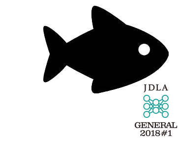

お前、誰よ？

名前：高橋かずひと
Twitter：@KzhtTkhs
お仕事：組込、画像処理、IoT、Web
最近インディーゲーム制作お手伝いしてます。
出没先

【Hand Detection】物体検出(Object Detection)等で手を検出すること※そのまんま動画の例では、「パー」「グー」「指さし」ですが、いろいろ手の形を試して、結構検出できたので実例をご紹介したい Tensorflow v1系 Object Detecton API利用MobileNet v2 SSDLiteを転移学習しています【作例②：NARUTOの印】両手を組み合わせた12種類の印※学習データ作るのが大変で、あまり枚数用意していないため、精度がイマイチ、、、学習データにアニメ画像も用いているので、アニメも一応認識可能【作例③：指さし+指先検出】若干、むりやりですが指先も、、、【作例④：映画HELLO WORLDのAR表示】NARUTOが出来るのだから、こちらも当然出来るだろうと言う感じではありますが、、、